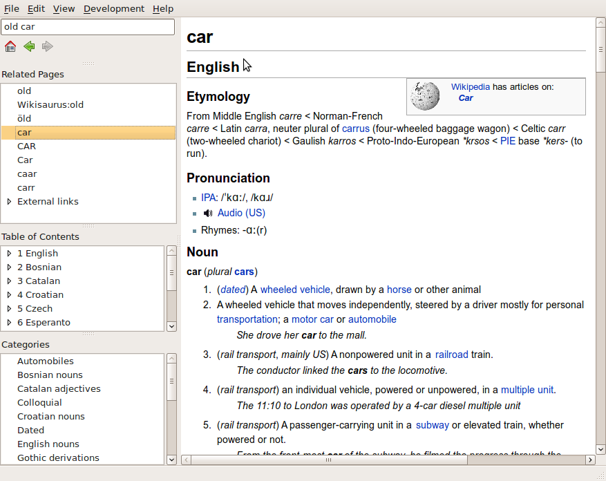

Quick lookup: searches for a word or a phrase as fast as you can type it. Also displays similar entries (with diacritics etc.)
Pronounciation: recordings with words pronounced by native speakers. Pronunciation is also available in IPA and SAMPA notation.
